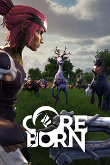

Coreborn
Detalles
|  | |
| Tiempo de juego | No Jugado |
| Última actividad | Nunca |
| Añadido | 11/13/2024 0:35:38 |
| Modificado | 11/13/2024 1:05:42 |
| Estado de finalización | No Jugado |
| Librería | Playnite |
| Fuente | PORCHE |
| Plataforma | PC (Windows) |
| Fecha de lanzamiento | 6/19/2024 |
| Puntuación de la Comunidad | 63 |
| Puntuación de la Crítica | |
| Puntuación de usuario | |
| Género | Acción Aventura Casual Indie Multijugador masivo Rol |
| Desarrollador | Blankhans |
| Editor | Blankhans |
| Característica | Cooperativo Cooperativo En Línea Logros De Multijugador Préstamo Familiar Un Jugador |
| Enlaces | Punto de encuentro Discusiones Guías Noticias Página de la tienda PCGamingWiki Logros |
| Tag | 3D Acción Acción y aventura Casuales Coloridos Combate Construcción Exploración Fabricación Fantasía JcE Mitos y leyendas Multijugador Mundo abierto Personalización de armas Personalización de personajes Relajantes Sandbox Supervivencia Tercera persona |
Descripción


Embárcate en una divertida aventura de supervivencia: Adéntrate en el extenso mundo de Tormentosia, donde las antiguas tensiones entre varias razas han desembocado en un conflicto interminable. La situación alcanzó su punto álgido cuando Sorgoth el Devorador invadió el mundo, causando una destrucción casi total. En un último esfuerzo por salvar lo que queda, los seis reinos restantes unieron su poder y sus recursos para crear una nueva tecnología revolucionaria: el Ultracore.
Pero no te dejes engañar, ya que la oscuridad se filtra en los bordes de las tierras aparentemente seguras. Vuestra generación heredó este mundo. Todos sois Coreborn. ¿Vuestro objetivo? Reclamar. Reconstruir. Restaurar.


Reclama la tierra como tuya: construye tus propias ciudades para crear un hogar próspero para ti y tus amigos. Repele a las fuerzas del mal, defiende tu ciudad de los esbirros de Sorgoth y no bajes nunca la guardia. Aprende una gran variedad de profesiones y habilidades, monta en monturas únicas y domina el combate en el mundo abierto. Conviértete en un miembro importante y valioso de tu comunidad, o juega en solitario o con un grupo elegido de amigos en servidores privados, reinos oficiales o tu propia sesión local.

Prepárate para desafiantes aventuras: Coopera con otros aventureros en partidas online PvE para recuperar la tierra de las fuerzas de Sorgoth o embárcate en aventuras en solitario. Recoge botín para crear nuevas armaduras y armas, haciendo progresar constantemente a tu personaje, tu equipo y tus asentamientos. Los más fuertes sobrevivirán para enfrentarse a los numerosos desafíos de la tierra, ¡incluidas emocionantes aventuras con valiosos premios!
Reúne recursos y aumenta tus defensas: Reunir recursos es clave para sobrevivir en Coreborn. Utiliza cientos de recetas individuales y construye estructuras para resistir las interminables oleadas de esbirros de Sorgoth. Reúnete con amigos para conseguir aún más recursos y recompensas.

Coopera con jugadores de todo el mundo: Únete a servidores públicos y conoce a jugadores de todo el planeta. Intercambia objetos, reúne recursos, encuentra nuevos compañeros de aventuras o simplemente disfruta de su compañía durante eventos y festividades estacionales.
Descubre la sabiduría de Tormentosia: Cuanto más explores, más descubrirás sobre esta tierra tan diversa. Descubre misiones, lugares ocultos con enemigos y recursos especiales, y reconstruye la historia de Tormentosia.
Vive nuestra propia aventura en Coreborn: Nations of the Ultracore. Sumérgete en un mundo donde reinan la colaboración, la creatividad y la exploración. Tanto si buscas un juego de supervivencia escalofriante como un emocionante juego cooperativo, Coreborn tiene algo para cada aventurero. ¿Estás listo para reclamar, reconstruir y restaurar?

Descubre aún más:
- Construye tus propias ciudades, hazlas progresar y defiéndelas por todo el enorme mapa
- Descubre lugares ocultos con enemigos y recursos especiales.
- Enfréntate a los elementos y protégete de las influencias externas del duro entorno.
- Desbloquea monturas únicas para recorrer el mundo y desbloquear nuevas zonas
- Configura tus propios servidores privados para disfrutar del juego con amigos o jugar en cooperativo local
- Únete a servidores públicos para participar en eventos y conocer gente
- Evoluciona en tu profesión entrenada